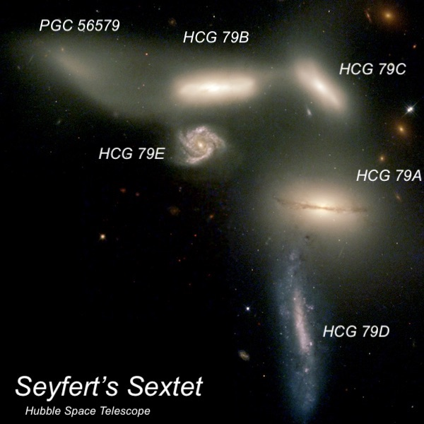
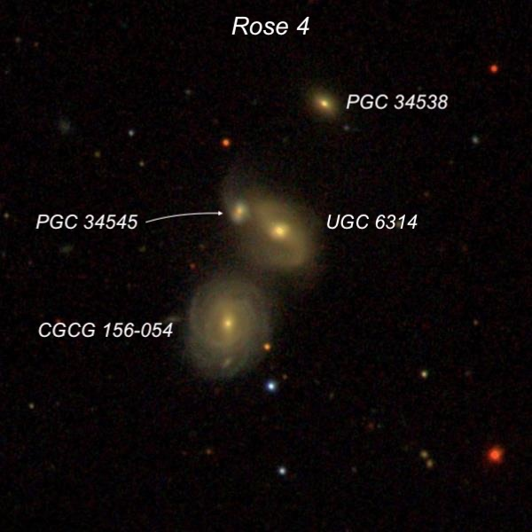
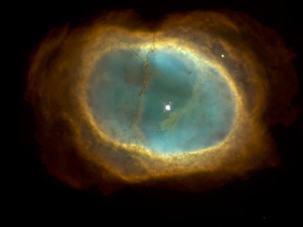
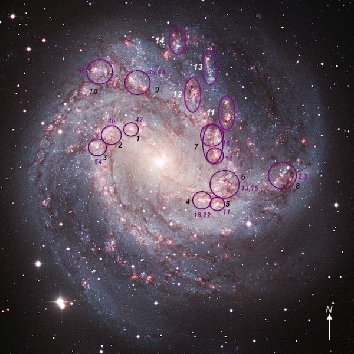

Deep Sky Delights from Texas – Part III
Saturday the 16th was the last official night of the Texas Star Party at Prude Ranch. Jimi had invited Scott Harrington and Brent Archinal over from the star party to observe with us. The Canadian model (RDPS) called for mostly clear skies, although the GFS predicted we might be within the northern edge of a coherent band of clouds that were streaming in from the southwest direction (Mexico). During the day it stayed cloudy and we drove over to the star party site to chat with some of the attendees. By sunset it appeared we would likely be clouded out, which was disappointing. After dinner, Scott and Brent came over and we talked awhile waiting for the clouds to at least thin out so that we could view some bright objects. When that happened, we went up to the observatory around 10:00 PM under partly to mostly cloudy skies. But after a disappointing view of NGC 4361 and M108 due to clouds and poor seeing, the Argo Navis device went out of alignment again and we had to spend another half hour realigning the scope.
Finally, it had cleared up enough in most of the sky that we started observing around midnight. Again, there was very good transparency and darkness with Howard and Scott recording SQM readings of 21.8 and 21.9 at one point. But we still had some thin passing clouds that may have affected a few of our views.
Seyfert's Sextet (NGC 6027) in Sextans is another tight grouping that I discussed in the May issue of Sky & Telescope magazine. Using 697x, all six members were easily seen. There are really only four interacting galaxies here – or perhaps 5 – as one lies far in the background at roughly 925 million light-years away, over 4 times the distance as the other members. HCG 79f (PGC 56579) has long been considered a tidal tail of HCG 79b, but a recent paper argues that it is instead a disrupted galaxy instead that was originally a late-type spiral and had lost most of its gas in the interaction, so that only a low level of star formation remains.
French astronomer Édouard Stephan discovered the group in June 1876 using the 31-inch silvered-glass reflector of the Marseille Observatory in southern France. Although he only reported a single nebula his description is telling: “a very faint star involved, two very faint stars near.” I feel it is likely that Stephan mistook a couple of the tiny galaxies as faint stars. as a 14-inch telescope will resolve three members at high power.

After viewing the ultra-compact Rose 3 quartet on Friday night, I wanted to follow up with Rose 4 in Ursa Major on Saturday night. This quartet squeezes into a 2' circle, although the northwestern member, PGC 34538, lies far in the background, with the other 3 members at a distance of roughly 390-400 million light years.
Using 375x, UGC 6314 appeared moderately bright, with a strong concentration and a very bright nucleus, slightly elongated SW-NE, about 40" × 30". PGC 34545 is situated at its northeast edge. CGCG 156-054, located 0.8' SE, was slightly fainter but perhaps a bit larger visually.

Patrick Ogle and colleagues at Caltech first defined Super Spirals in 2016 as spiral galaxies with an r-band luminosity of roughly 8 to 14 times that of the Milky Way. Super Spirals are giant and massive, with diameters from 185,000 light-years to over 430,000 light-years. The closest spiral to qualify is CGCG 122-067 at a distance of 1.2 billion light years (it was easily seen in my 24-inch), but I’ve seen distant examples beyond 3 billion light years through Jimi’s 48-inch telescope. Ogle’s team identified a total of 53 Super Spirals with a redshift z < 0.3 (roughly 4 billion light years co-moving distance).
Saturday night’s target was SS 48 in Bootes, a superluminous spiral at a light-travel time of 1.8 billion years. At 697x, it appeared faint, small, and round (easily seen continuously), about 12"-15" diameter. It seemed surprisingly large for such a distant galaxy.
Scott Harrington wanted to see IC 4479 in Bootes, a relatively bright spiral at a distance of 660 million light years. Using 697x, it was a moderately bright, round glow about 1' in diameter. What was unusual for such a distant galaxy is that we could easily see a strong spiral arm curving along the southeast side, with a slight brightening at the south-southeast tip.
After identifying two tiny galaxies on the outskirts of the globular cluster M12, we called it quits for the night around 3:00 due to poor seeing and passing clouds.
Sunday night, after TSP ended, was the highlight of the trip. Although the forecast called for clear skies during the day and night, wispy clouds crisscrossed the skies during the day and even at sunset. But the transparency looked excellent (the mountains in the area were very sharply defined) and the clouds started thinning out after sunset. By the time we went up to the observatory around 9:30 PM to tweak the previous night’s alignment, the sky was cloud-free.
During the night, the seeing varied from poor to average to fairly good. Similarly, there were times when the wind was gusty and bouncing the scope up and down, but at other times (particularly the last couple of hours) it was very calm. The transparency and darkness, though, were amazing, with the Milky Way shockingly bright, extensive in size, and highly structured. Howard recorded numerous SQM readings in the 21.85 to 21.93 range (the latter at 1:30), with a 21.91 reading at 3:00 AM. We stopped about 5:20 as the sky was brightening at that point.
Our warm-up object this time was NGC 3132, sometimes called the Eight-Burst planetary or the Southern Ring, which is a beauty in the 48-inch. Based on two observations, the Eight-Burst appears extremely bright, with a very high surface brightness ring. A large, dark central hole was punctuated by a striking 10th-magnitiude central star, and a faint star is visible at the SSW edge of the ring. The annulus appears relatively thin and elongated NW-SE, with its edges a bit ragged. The longer west and east ends are nearly flat, but the north and south end-caps are slightly rounded, creating a somewhat boxy appearance. The main ring is encased in a thin, oval outer shell that is slightly offset in position angle.

Howard wanted to take a look at the APM 08279+5255, a lensed quasar in Lynx with a redshift of z = 3.91, implying a light-travel time of roughly 12.2 billion years! The lensed image consists of three components with a maximum separation of only 0.35", and APM 08279+5255 is the first quasar discovered with an odd number of lensed images. The listed magnitude is 16.5, which is normally an easy catch for this scope, but all of us were surprised by how faint it appeared. Perhaps the magnitude is variable and we happened to catch near a minimum.
Later in the night we took a look at QSO B1422+231, another lensed quasar with four components within a diameter of 1.3" (too close to resolve). In this case, the redshift is z = 3.62, so the light-travel time is also close to 12 billion years. But the lensing magnification is 10 to 20 times its intrinsic brightness (compared to roughly 2.5x in the case of APM 08279+5255) and this quasar appears MUCH brighter. It was seen immediately as a 15.8-magnitude “star” at first glance in the eyepiece.
Of course, we didn’t look exclusively at faint objects. We took time to drool over the view of M83 in the eyepiece. I’ve observed this galaxy several times previously in this scope, as well as through a 25-inch scope in Australia, and I always find features in the galaxy I hadn’t noticed before. This time I was amazed by the amount of detail visible on the north and northeast side of the halo. Several spurs of the northern spiral arm appeared to hang down in the eyepiece field, extending further north. These offshoots contained several noticeable knots (massive star-forming factories). A dust lane was also noticed running along the south edge of the bar on its southwest side. All of the circled knots in this image were identified.

To be continued…